NetCDFファイルのインポート
NetCDF-Importing
Originでは、NetCDFファイルのインポートおよび部分インポートがサポートされています。
NetCDFファイルをインポートする
NetCDFファイルはワークブック/行列ブックにのみインポートできます。.ncファイルをインポートする場合、ワークブックもしくは行列ウィンドウがアクティブになっていることを確認してください。
NetCDFファイルの場所
ローカルPCもしくはネットワークにある.ncファイルをインポート
- ローカルPCもしくはネットワークにある.ncファイルをインポートするには
- .ncファイルをWindowsのエクスプローラーからOriginのワークスペース、ワークブックまたは行列にドラッグします。
または、
- データ：ファイルに接続：NetCDF...メニューを選択して.ncファイルを選び、OKをクリックします。
- データコネクタブラウザが開きます。
- 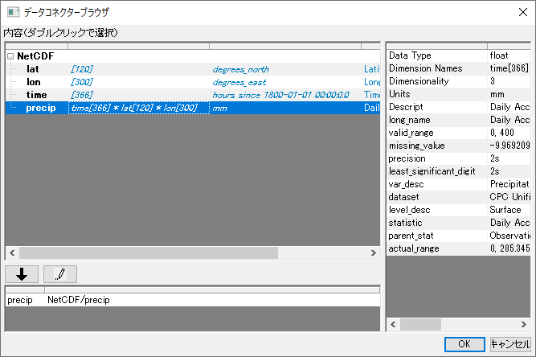
Webにある.ncデータをインポート
- データ：Webに接続を選択します。
- Webに接続ダイアログにて、ファイルタイプ をNetCDF (オプション）に設定し、URLリンクを入力します。 (例えばhttps://psl.noaa.gov/thredds/fileServer/Datasets/cpc_us_precip/precip.V1.0.1948.nc)、もしくは過去にインポートしたことがあれば最近使ったURLをクリックします。OKをクリックします。
- データコネクタブラウザが開きます。
データコネクターブラウザ
データコネクタブラウザダイアログでは、左パネルに全ての変数が基本的な情報とともに一覧表示されます。Originは一度に1変数のインポートのみをサポートしています。
左パネルの変数をクリックすると右パネルに追加の情報が表示されます。例えばsst(上の画像の最初のセクション)は3次元データです。
- ダブルクリックするか下向き矢印をクリックすることで下部パネルに追加されます。
- ワークブックがアクティブでファイルを行列もしくはワークブックにインポートできる場合には、選択するダイアログがポップアップします。
- 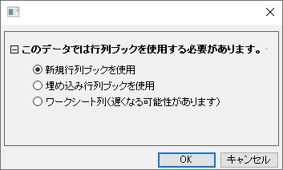
- 新規行列ブックを使用：最もシンプルな方法です。
- 埋め込み行列ブックを使用：行列にデータをインポートしますが、行列はワークブックにシートとして埋め込まれます。
- ワークシート列（遅くなる可能性があります）：これにより、行列の各時間フレームが複数の列にインポートされるため、多数の列を含むワークシートが作成され、データが大きい場合は速度が低下する可能性があります。
- インポートオプションボタン（「鉛筆」アイコン）をクリックして、オプションを設定できます。ここでは、部分インポートを指定したり、経度を変換したり、行列を垂直方向に反転したり、数式を使用してデータを変換したりできます。
- 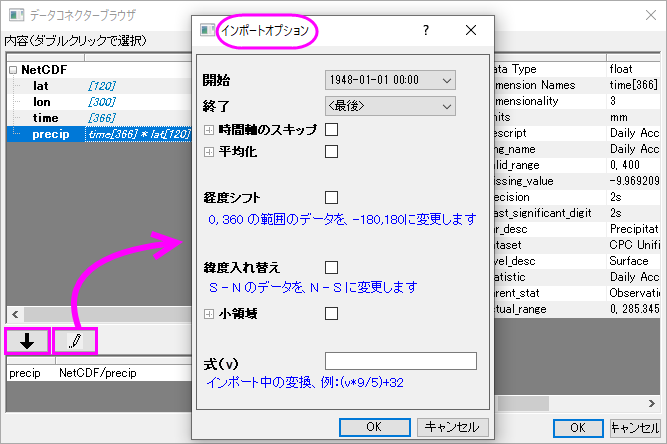
- OKをクリックしてインポートオプションを閉じ、再度OKをクリックしてブラウザを閉じてデータをインポートします。ファイルサイズが大きい場合は、インポート完了まで時間がかかることがあります。ファイルがインポートされると、行列もしくはワークブックの左側にブラウザパネルが追加されます。
- 行列にインポートした場合、行列ウィンドウの上側にあるスライダーで各行列オブジェクトの表示を切り替えできます。

- ワークブックをインポートした場合、全ての列がシートにインポートされます。
詳細なインポートオプション
コネクタアイコン
インポート後、コネクタアイコン がワークブックまたは行列の左上に表示されます。
がワークブックまたは行列の左上に表示されます。
コネクタアイコンをクリックして次のことが行えます。
- 選択...をクリックして他のデータをインポートするよう切り替えます。その前にインポートしたデータと入れ替えます。
- オプションを選択して、インポートオプションを変更します。
- 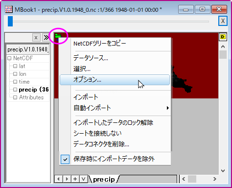
ブラウザパネル
ブラウザパネルの左側には、この.ncファイルにあるすべての変数が一覧表示されています。ほかの変数を右クリックすることでそれらを追加できます。
- シート追加および接続：ワークブックまたは行列の新しいシートに選択した変数を追加します。
- 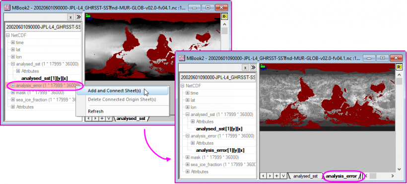
- アクティブシートに追加：このオプションはワークブックにインポートしたときのみ利用可能です。選択した変数をアクティブなワークシートの新しい列に追加します。

次元変数の異なるNetCDFをインポート
1次元変数のインポート
lat, lon や time, level などは1次元のデータです。これらはワークブックまたは行列にインポートできます。
Note:
ワークブックウィンドウがアクティブな場合に1次元データをインポートしてもワークブックや行列を選択するダイアログはポップアップしません。Originは自動的に単一セルのデータだと判断してそれをワークシート列にインポートします。
- ワークブックウィンドウがアクティブな状態で、メニューからデータ：ファイルに接続を選択して.ncファイルを選びます。
- データコネクタブラウザダイアログにて、変数をダブルクリックするか、インポートする変数を選択して下矢印をクリックします。
- 変数が下部パネルに入ります。
- OKをクリックして、インポートします。
- データコネクタアイコンをクリックし、選択...をクリックすることで別の1次元データをインポートするよう変更します。その前にインポートしたデータと入れ替えます。
- 全ての変数はワークブックの左パネルに一覧表示されます。任意の1次元データをクリック、さらに右クリックしてアクティブシートに追加を選択して、現在のシートに追加します。
またはシート追加および接続を選択して同じブックの新しいシートに選択した変数をインポートします。
2次元変数のインポート
lat*lonなどは2次元のデータです。これらはワークブックまたは行列にインポートできます。
- 行列ウィンドウがアクティブな状態で、メニューからデータ：ファイルに接続を選択して.ncファイルを選びます。
- 2次元変数をダブルクリックして抽出、またはインポートする変数を選択して下矢印をクリックします。
- 新しい行列ブックを作成 をクリックしてインポートします。
- 変数が下部パネルに入ります。
- OKをクリックして、インポートします。
- データコネクタアイコンをクリックし、選択...をクリックすることで別の2次元データをインポートするよう変更します。その前にインポートしたデータと入れ替えます。
- 全ての変数はワークブックの左パネルに一覧表示されます。シート追加および接続を選択して同じブックの新しいシートに選択した変数をインポートします。
3次元変数のインポート
3次元データはワークブックまたは行列にインポートできます。
- メニューからデータ：ファイルに接続を選択して.ncファイルを選びます。最初のセクションの上の画像にあるsstのような3次元の変数 (例： time * lat * lon)をインポートします。
- ダブルクリックするか下向き矢印をクリックすることで下部パネルに追加されます。
- 新しい行列ブックを作成 をクリックしてインポートします。
- 変数が下部パネルのリストに入ります。
- OKをクリックして、インポートします。
4次元変数のインポート
4次元データはワークブックまたは行列にインポートできます。
- 変数の次元数が4（例えばtime[248] * level[18] * lat[180] * lon[360]）の場合には、新しい行列ブックを作成を選択してインポートします。デフォルトでは、Origin はインポートする最初のレベルを選択します。1 つの行列シートを含む行列ブックがそのレベルに対して作成され、レベル値が行列シート名として表示され、各時間枠が 1 つの行列オブジェクトに表示されます。行列シートの上部にあるスライダーをドラッグすることで全てのインポートされた時間フレームを確認できます。
- コネクタアイコンをクリック、選択...をクリックして接続文字列（例えばNetCDF/t[z][10][y][x]、これでレベル10がインポートされます）を確認できます。
- 行列シートへのインポートでは複数のレベルに対応しています。例えば、NetCDF/t[z][2:5][y][x]と修正することでレベル2からレベル5までをインポートできます。
行列に全てのレベルをインポートする場合、文字列をNetCDF/t[z][1:0][y][x]またはNetCDF/t[z][s][y][x]と修正することができます。
- 次のLabTalkスクリプトを使うことで、全18レベルのデータを各レベルが1つの行列シートにある状態で単一の行列ブックにインポートできます。
newbook mat:=1 sheet:=18; //20シートある行列ブックを作成します
string fname$="c:\tmp\mynetCDF\aa.nc"; //ファイル名を指定します
wbook.dc.add("netCDF"); //NetCDFコネクタを行列ブックに追加します
loop(i, 1, 18)
{
page.active=i; //シートをアクティブにします
wks.dc.source$=fname$; //コネクタのソースファイルをアクティブシートに設定
wks.dc.sel$="NetCDF/t[z][$(i)][y][x]"; //どのレベルをインポートするか指定します
wks.dc.import(); //インポート
}
 | データコネクタを使用してNetCDF変数を4Dとして行列にインポートする場合、構造保護によりシートの変更が防止されます。つまり、この行列にシートを挿入/削除/追加したり、シートを新しいブックにドラッグしたりしないでください。
- 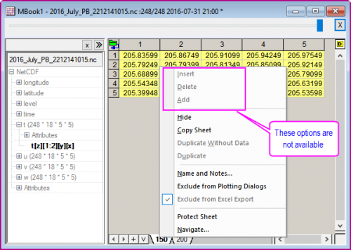
|
3D/4D変数のピクセル値をワークシート列にインポート
Originは、例えば全ての時間枠の特定の緯度経度における単一のピクセル値をワークシートの列にインポートすることをサポートしています。
例えば、time[300]*lat[145]*lon[192]という3D変数のtasがあり、列に入った全ての時間フレームの2つめの緯度と5つめの経度の値をインポートしたいとします。
- その場合、ワークブックウィンドウをアクティブにしてnetCDFデータコネクタを開き、.ncファイルを選択します。
- データコネクタブラウザダイアログにて、変数tasをダブルクリックします。
- 表示されたプロンプトで3つ目のオプションワークシート列（遅くなる可能性があります）を選択します。
- 下部パネルで[x][2][5]を追加してOKをクリックします。
- 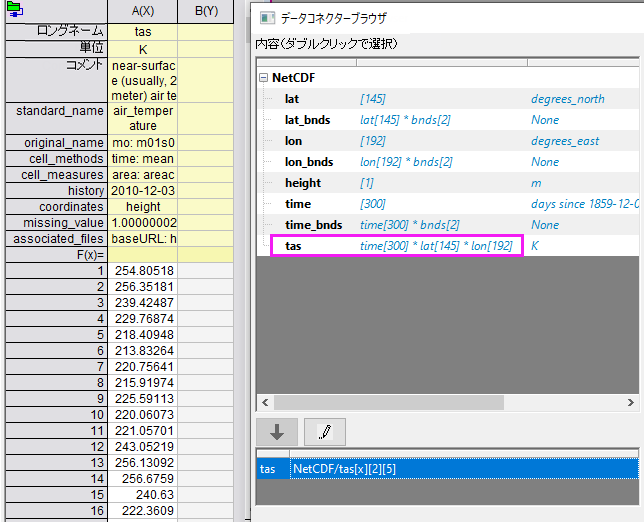
- 次にワークブックの左パネルでtime変数をクリックします。さらに右クリックしアクティブシートに追加を選択して同じシートに時間列を追加します。time列をXにtasをYに設定することで、さらなる解析・プロットが可能です。
- Note: 4次元変数 time[300]*level[20]*lat[145]*lon[192] の場合、例えば全時間フレームのレベル1の2つ目の緯度、5つ目の経度のピクセル値を列にインポートするには、[x][1][2][5]を加える必要があります。
NetCDFファイルを部分インポートする
インポートするデータの時間範囲を指定する
データコネクタブラウザで、インポートするデータセットを選択した後、インポートオプション - スライス、平均化、数式ボタン をクリックし、インポートオプションダイアログを開きます。
をクリックし、インポートオプションダイアログを開きます。
- 時間軸のスキップ: m レコードを読み取り、n レコードをスキップして繰り返します。
- たとえば、データが月次の場合、読み取り= 1 およびスキップ= 11 は、日時範囲全体でひと月のデータを読み取り11か月分をスキップのパターンを繰り返します。
- 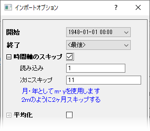
インポート中に年平均/月平均を計算する
インポート処理の中で、年平均/月平均を直接インポートすることができます。平均化オプションは、間隔に基づいて平均を計算し、年ごとのサンプリングまたは連続のいずれかを実行します。
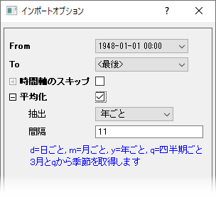
インポートオプションダイアログで、平均化セクションを広げて設定します。
| 抽出
|
- 連続：連続時間の平均を計算します。 例えば、5年分のデータセットがあるとします。間隔 = y に設定すると、連続12か月となります。そのため、年間の平均値を持つ5つの行列を取得することになります。
- 年ごと：各の同じ月の平均を計算します。 例えば、5年分のデータセットがあるとします。間隔 = m に設定すると、12の行列が取得され、各行列は当月の5年間の平均値になります。
|
| 間隔
|
連続する月を示す数値を入力します。
文字を入力します：d=日ごと, m=月ごと, y=年ごと, q=四半期ごと
|
ここでは、2つのサンプルを使用して、時間軸のスキップと平均化のオプションで、指定した月の年間データの平均値をインポートする方法を示します。
サンプル1： 1990～1903年の各年の3か月（4月、5月、6月）の平均値をインポート
- 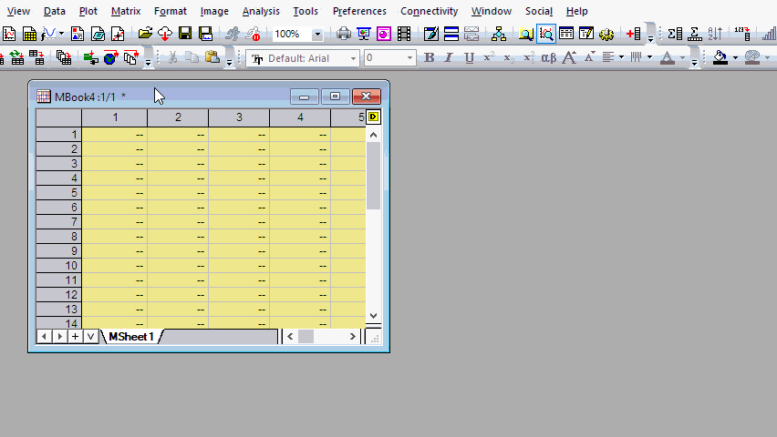
サンプル2： 4年間（1900年から1903年まで）の4月、5月、6月の平均値をインポート
- 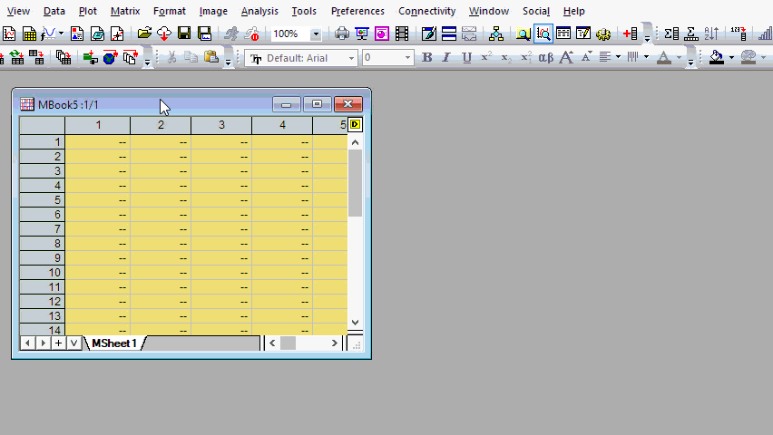
| - 2023bから、範囲データ (例: 2022-10-01 1:00 - 2022-10:01: 23:00 )の毎日の平均をインポートすると、2022-10-01のように日付部分yyyy-mm-ddでのみ行列名に表示されます。
- また、連続した年の平均の場合、行列名は2022のように年で表示されます。この設定を無効にする場合は、システム変数@MOL = 1に設定します。
|
インポートする小領域
インポートオプションダイアログで、小領域セクションを展開して、インポートする地域部分を経度と緯度で指定すると、緯度と経度の対応するインデックスが見つかり、接続文字列に使用されます。
- 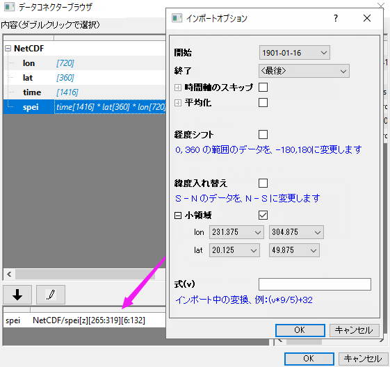
大きなデータでは、小領域とN行またはN列ごとにスキップを行うこともできます。例：NetCDF/analysed_sst[z][2100:4800|1-40#][300:6600|1-50] はインデックス2100から4800までの緯度は1インポート、40スキップ、#は緯度が反転、インデックス300から6600までの経度は1インポート、50スキップ、を意味します。
- 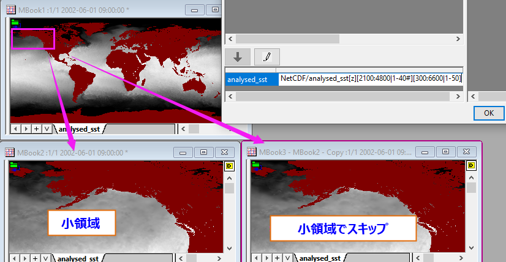
経度をずらす
経度が約（0, 360）の範囲にある場合、このチェックボックスをオンにします。経度が(-180,180)にシフトされます。
緯度の反転
デフォルトでは、インポートされたデータは南から北となります。緯度を北から南に変更するには、このチェックボックスを選択します。
式
インポート処理において、行列の新しい値を数式によって計算できます。
例えば、インポートした温度データを摂氏から華氏に変換する場合、この編集ボックスに以下の式を入力します。vは、元のインポートされた行列のセル値を表します。
(v*9/5)+32
接続文字列
インポートオプションを設定してダイアログを閉じると、左側の下部にある接続文字列が更新され、インポートのカスタマイズに使用した構文が表示されます。直接文字列をダブルクリックして編集/修正することもできます。

接続文字列の構文は複雑になる可能性がありますが、以下の基本的な形式に従います。
NetCDF/variable[z][y][x]
ここで、variableはインポートする変数であり、z、y、xは、z、y、およびxディメンションデータの部分的なインポートを含む処理を指定します。
| - インポートオプションダイアログを使って接続文字列を作成することおすすめします。
- 4次元変数をインポートする際には1レベルにどのようにインポートするか最初に鉛筆ボタンをクリックします。文字列を取得しレベルの[z]と[y]の部分を修正します。例えば、4次元変数のインポートセクションにあるループ部分を修正します。例えば、iを1から9までループさせ、wks.dc.sel$="NetCDF/t [1:0|ave-d][$(i*2)][y][x]"を使って他のレベル2、4、6、...、18ごとにインポートし、全フレームインポートではなく、日平均をインポートします。
|
ビューモード
NetCDF行列はデータモードとイメージモードで表示できます。表示：データモード/イメージモードで変更できます。新しいNetCDFファイルをインポートした際、行列がデータモードかイメージモードのどちらで表示されるかは行列サイズに依存します。
- 一般的には、行列はイメージモードで表示されます。
- 行列の次元（行*列)が小さい場合、イメージモードの代わりにデータモードが使用されます。システム変数@VIMが初回インポート時のイメージ表示を設定する最小のピクセル数を制御しています。デフォルトでは、@VIM=400
- 行列にファイルを再インポートするときまで選択したビューモードｊは維持されます。これは行列の次元には影響しません。